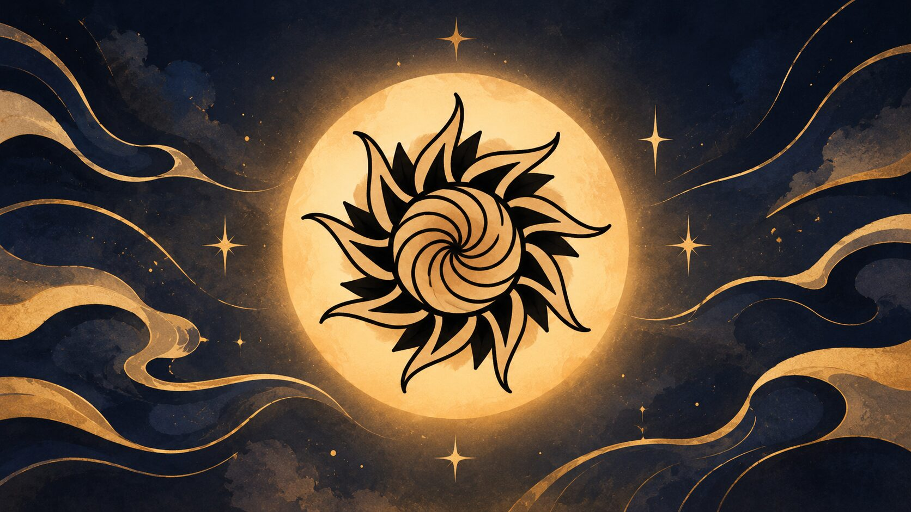

Sunshine OS is a standalone Arch-based distribution, built with archiso and installed with Calamares. It is configured to be used from the terminal as well as from a graphical desktop, and it ships with btrfs snapshot support and tools that check and repair the system.
What is included on top of a base Arch install.
The live session runs KDE Plasma. The installer adds Hyprland with a Quickshell desktop.
snapper takes timeline snapshots, snap-pac wraps every package update in a pre and post snapshot, and grub-btrfs lists them as bootable entries in the GRUB menu.
sunshine-doctor checks identity, package manager, boot files, services and snapshots, and --fix repairs what is safe to repair.
sunshine-boot-repair rebuilds the initramfs, checks the kernel image and regenerates GRUB and its menu on an installed system.
sunshine-fix-pacman clears stale locks, repairs a broken keyring, refreshes stale mirrors and rebuilds damaged databases.
A plain Arch update would turn the system back into “Arch Linux”. A pacman hook, sunshine-identity, keeps it Sunshine OS.
One application for pacman, the AUR and Flatpak. Installed packages are marked and sources are color coded.
Full-system encryption is one option in the graphical installer, or one question in the text installer. One passphrase at boot, asked by GRUB.
A user timer reports available updates. sunshine-update runs them in a terminal with a polkit password prompt.
Users get fish as their login shell. sunshine-info prints system information to paste when asking for help.
KDE Connect pairs a phone for files, notifications and clipboard. AirPods report battery for each pod and the case, with noise control.
Graphical (Calamares) and text installers for UEFI and BIOS, on btrfs or ext4. The ISO is built by ./build.sh inside a Docker container, so the host is never modified.
Commands included for checking and repairing the system. Output captured from a test install.
Check identity, package manager, desktop, boot and restore points. --fix repairs.
List, create or delete restore points (btrfs snapshots).
Repair initramfs, kernel image, GRUB and the boot menu.
Repair locks, keyring, mirrors and databases.
Free disk space: old package files, unused packages (asks first), old logs, old restore points.
Run system updates from a terminal with a polkit prompt.
Check the Sunshine OS identity. A pacman hook runs it after every update of the filesystem package.
Print system information, for support requests.
A warm, dark palette by default: gold on deep indigo. The default wallpapers ship with the system.

This page follows the same idea as the desktop: pick a time of day and the colors change.
Press T to cycle. The page adopts the active theme.
Three steps. Nothing on your computer changes until you press Install.
Looking up the newest release…
GitHub limits a single file to 2 GB, so the ISO comes in parts. Download all of them into one folder, then join them:
# Linux / macOS cat sunshineos-*.iso.part* > sunshineos.iso sha256sum -c sunshineos-*.iso.sha256 # Windows (cmd) copy /b sunshineos-*.iso.part* sunshineos.iso
Prefer building it yourself? git clone https://github.com/tak0dan/SunshineOS && cd SunshineOS && ./build.sh (Docker; it never touches your system.)
Any tool works; with dd:
sudo dd if=sunshineos.iso of=/dev/sdX bs=4M status=progress oflag=sync
The Welcome window opens by itself. Pick btrfs to get restore points. Keep the internet connected: the Hyprland desktop is fetched during the install.